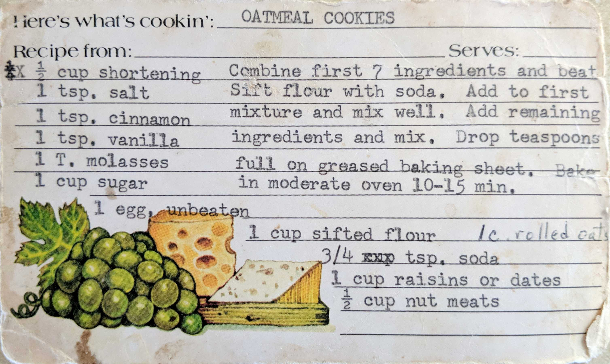

Oatmeal Cookies
1/2 cup shortening
1 tsp. salt
1 tsp. cinnamon
1 tsp. vanilla
1 T. molasses
1 cup sugar
1 egg, unbeaten
1 cup sifted flour
1 c. rolled oats
3/4 tsp. soda
1 cup raisins or dates
1/2 cup nut meats
Combine first 7 ingredients and beat. Sift flour with soda. Add to first mixture and mix well. Add to first
mixture and mix well. Add remaining ingredients and mix. Drop teaspoons full on greased baking sheet. Bake
in moderate oven 10-15 min.